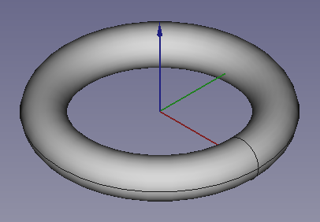
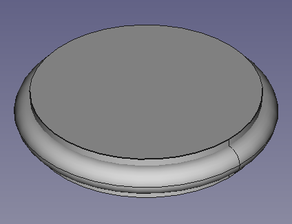
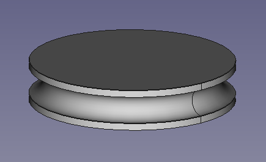
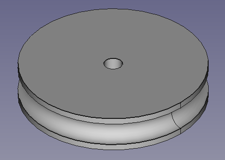
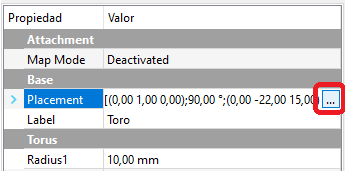
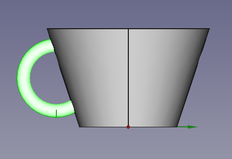
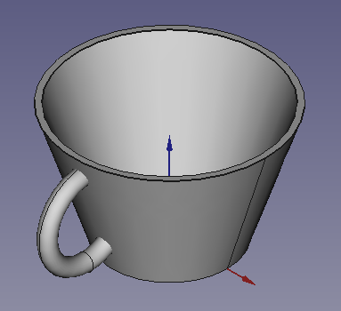

12. Piezas toroidales¶
En este tutorial vamos a aprender a utilizar otro tipo de piezas sólidas, los toroides.
Abrimos la aplicación FreeCAD y hacemos clic en el icono para crear un nuevo documento
 .
.Seleccionamos el banco de trabajo Part para comenzar a diseñar objetos en 3 dimensiones.
En este punto vamos a añadir los ejes de referencia para que nos ayuden a situar las piezas correctamente.
En el menú
Ver... Activar o desactivar cruz de los ejes.
Ahora creamos un toroide o 'rosquilla' clicando el quinto icono de la barra de objetos sólidos.

Seleccionamos ver la pieza en vista isométrica.

La pieza se verá como en la siguiente imagen.
A continuación, en la pestaña de Datos, podemos cambiar los siguientes parámetros del toroide.
Radio1 (Radius1) Este es el tamaño total que tiene el toroide.
Radio2 (Radius2) Este parámetro cambia el grosor del toroide.
Ángulo3 (Angle3) Este parámetro permite cambiar la longitud del toroide.
Cambia todos los parámetros para comprobar como funcionan.
Nota
Para actualizar la imagen de la pieza en pantalla presionamos la tecla de función
F5o bien en el MenúEditar... Actualizar pantalla.A continuación vamos a crear una polea a partir de un cilindro y un toroide. Cambiamos los parámetros del toroide con los siguientes valores.
Radio1 (Radius1) = 15 mm
Radio2 (Radius2) = 2 mm
Ángulo3 (Angle3) = 360º
En el menú de Placement... Posición, cambiamos la posición del toroide, elevándolo 3 milímetros, con los siguientes valores.
x = 0 mm
y = 0 mm
z = 3 mm
Ahora creamos un cilindro y cambiamos sus parámetros con los siguientes valores.
Radio (Radius) = 15 mm
Altura (Height) = 6 mm
Ángulo (Angle) = 360º
Obtendremos la siguiente imagen en pantalla.
Seleccionamos primero el cilindro y a continuación, con la tecla
Controlpresionada, seleccionamos el toroide. Restamos una pieza de la otra para conseguir la siguiente pieza.Para terminar, crearemos un cilindro con un radio de 1,5 mm y lo restaremos para crear un eje de 3 mm de diámetro en el centro de nuestra polea.

Ejercicios¶
Crear una taza utilizando un toroide para crear el asa.
La taza se creará a partir de un cono. El radio inferior de la taza será de 15mm, el radio superior de 25mm y la altura será de 30mm.
Después de crear un toroide hay que desplazarle y rotarle para que se convierta en el asa de la taza. Primero presionar en la pestaña de Datos y menú Placement.
Después presionar en el botón con tres puntitos.
Se abrirá un cuadro de diálogo en el que podemos Trasladar y Rotar el toroide.

Presionando
OK, la pieza quedará como se ve a continuación en vista derecha.Solo queda sumar las dos piezas y restar el hueco de la taza sabiendo que las paredes tienen 1 milímetro de espesor.
Crear un smiley utilizando un toroide para crear la boca.
El smiley se creará a partir de un cilindro de 15mm de radio y 3mm de altura. Los huecos en la cara tendrán una profundidad de 2mm.
La sonrisa tiene un ángulo de 120º y se hace sin cambiar el tamaño del toroide estándar.
Los ojos se hacen con cilindros estandar, sin cambiar su tamaño, y desplazándoles 8mm en los ejes X e Y.

Recuerda cambiar el color de la pieza final por el amarillo, en la pestaña de Vista... Shape color.
Videotutorial¶
Vídeo: usando toros.